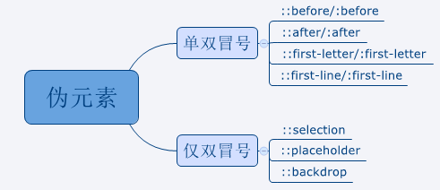

伪类与伪元素
伪类与伪元素，经常会搞混淆。伪元素与伪类的区别，' : '与 ' :: '的区别？
伪类和伪元素是用来修饰不在文档树中的部分。比如：一句话中的第一个字母，列表中第一个元素。
伪类: 用于向当前已有元素[处于某种状态时]，添加对应css样式。
伪元素: 用于创建一些文档树中的元素，并添加css样式。


伪元素与伪类区别：是否创建新元素。
单冒号与双冒号区别: 在css3中 ':first-child' 是伪类, '::before' 是伪元素，
但是因为ie8以下的老浏览器不支双冒号，所以用单冒号，但是css3中新增
伪元素必须用双冒号。
注意：注释："first-letter" 伪元素只能用于块级元素。